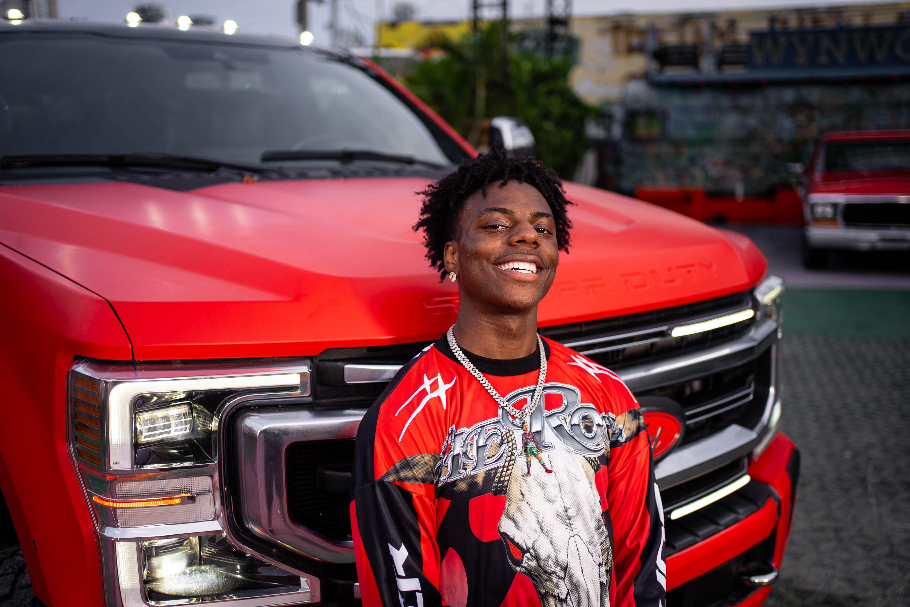
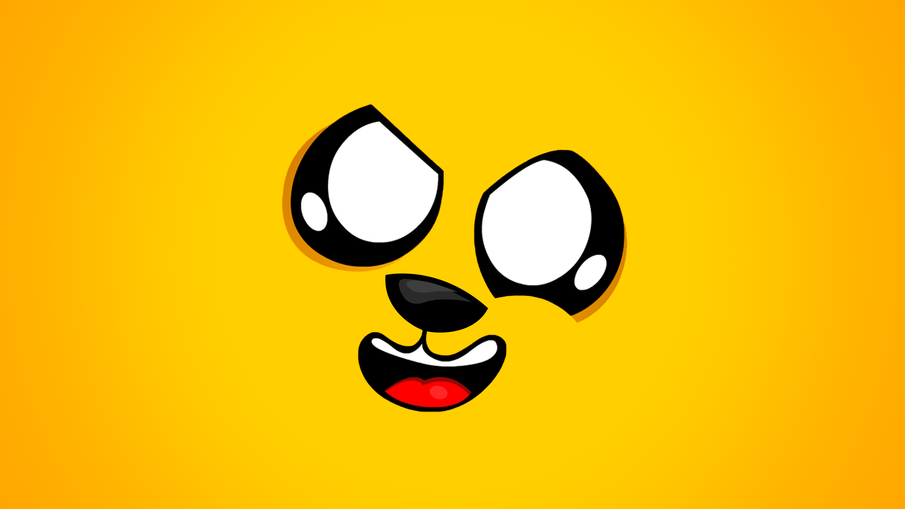

IShowSpeed
Content Creator/Youtuber
IShowSpeed, whose real name is Darren Watkins Jr., is an American YouTuber, livestreamer, and online content creator. He is known for gaming, entertainment, reaction videos, and energetic livestreams.
POiiSED
YouTuber
POiiSED is an American YouTuber and gaming content creator best known for playing horror video games and reacting with his famous loud screams. He started his YouTube channel in 2011 and has built a following of over 2 million subscribers.

Markiplier
YouTuber
Markiplier, whose real name is Mark Edward Fischbach, is an American YouTuber, actor, and content creator. He is best known for his gaming videos, especially horror games, as well as comedy and entertainment content. He is one of the most popular gaming creators on YouTube, with a large worldwide fanbase.

Mikecrack
Youtuber
Mikecrack is a Spanish-speaking YouTuber, gamer, and content creator. He is best known for creating entertaining Minecraft gameplay, animations, challenges, and adventure videos, often featuring his character Mike.